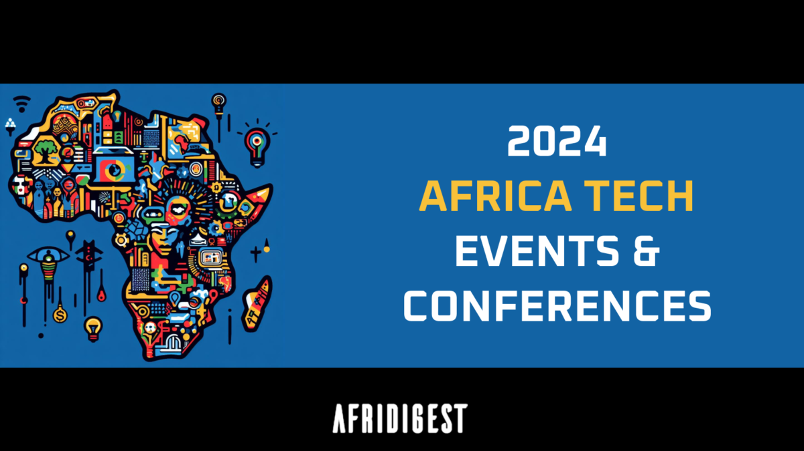

History
Origin Of TechCon
TechCon® North America was first held in 1996 in New Orleans, Louisiana. It has since moved about the U.S., accommodating the growing number of delegates and utility hosts. It often includes a regional facility tour of the sponsoring utility. Most recently, the conference averaged 200 in attendance representing 11 various countries and 30 interactive exhibiting corporations. TechCon North America offers a vibrant and unparalleled learning experience with top-notch topics and speakers.